- 安装 brew 工具
下载编译
tesseract需要的环境# Packages which are always needed. brew install automake autoconf libtool
brew install pkgconfig
brew install icu4c
brew install leptonica
# Packages required for training tools.
brew install pango
# Optional packages for extra features.
brew install libarchive
# Optional package for builds using g++.
brew install gcc编译
下载
tesseract源码方法一
# 在以下地址中下载 https://github.com/tesseract-ocr/tesseract/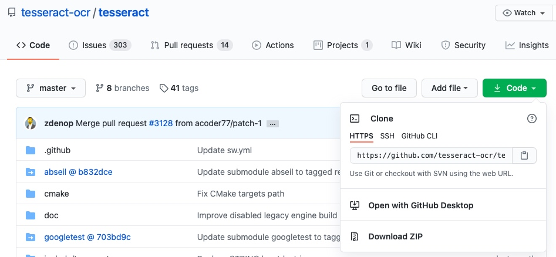
方法二
git clone https://github.com/tesseract-ocr/tesseract/开始编译
# 下面每一行都是一条指令 cd tesseract
./autogen.sh
mkdir build
cd build
# Optionally add CXX=g++-8 to the configure command if you really want to use a different compiler.
../configure PKG_CONFIG_PATH=/usr/local/opt/icu4c/lib/pkgconfig:/usr/local/opt/libarchive/lib/pkgconfig:/usr/local/opt/libffi/lib/pkgconfig
make -j
# Optionally install Tesseract.
sudo make install
# Optionally build and install training tools.
make training
sudo make training-install
安装语言包
- 打开以下网址
https://github.com/tesseract-ocr/tessdata
以
traineddata结尾的都是语言包
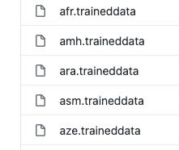举个例子
下载英文语言包和中文简体语言包
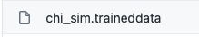

点击对应语言包链接
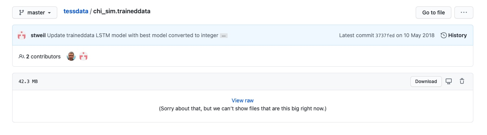
点击下载
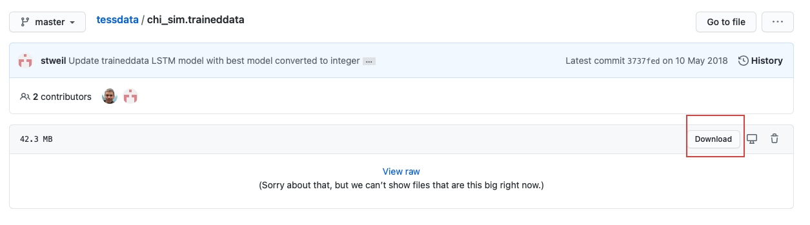
如下打开目录
# 打开 /usr/local/share/tessdata open /usr/local/share/tessdata放刚才下载好的文件入刚才打开的文件夹
利用中文语言包测试如下图片
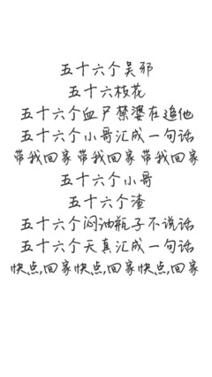在此图片目录中执行如下命令
# 图片名就是要识别图片名字 # 输出文件是识别好的文字输出的文件
tesseract -l chi_sim 图片名 输出文件期待已久的结果来了
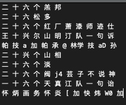
是不是觉得乱七八糟，是就对了tesseract对很多字体支持并不好，所以需要自己制作语言包。
制作语言包
下载
jTessBoxEditor- 打开如下网页 https://sourceforge.net/projects/vietocr/files/jTessBoxEditor/
- 点击如下安装包并下载 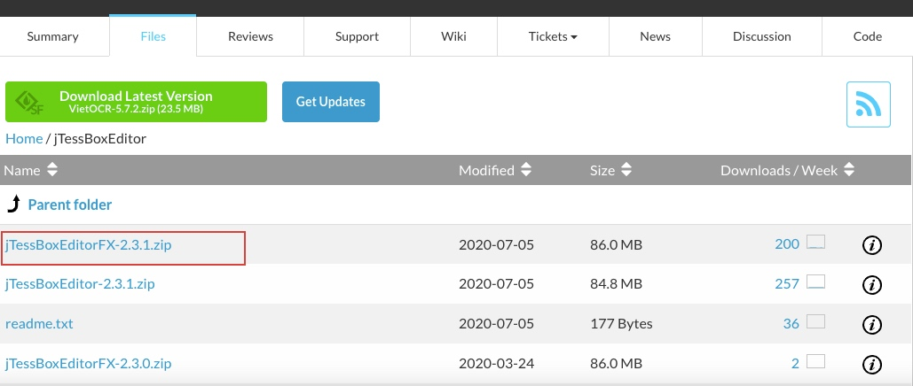
解压下载文件，就可以使用了
# 注意：使用java 1.8 的环境（别的版本可能会出现问题） # 执行如下命令
cd jTessBoxEditorFX
java -jar jTessBoxEditorFX.jar合并图片生成
tif文件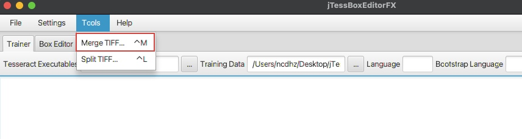
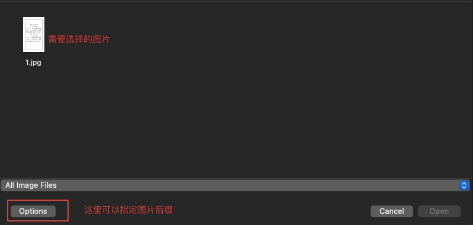
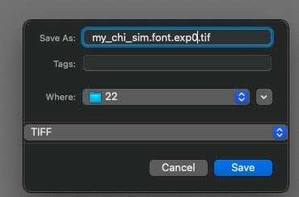
生成
box文件# cd 到 tif 文件目录 tesseract my_chi_sim.font.exp0.tif my_chi_sim.font.exp0 nobatch makebox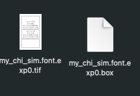
打开
tif文件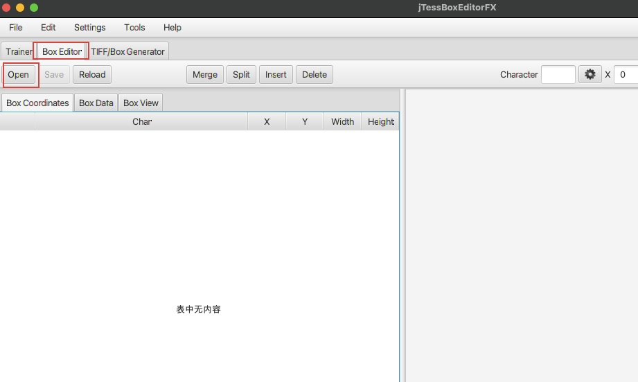
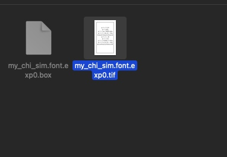
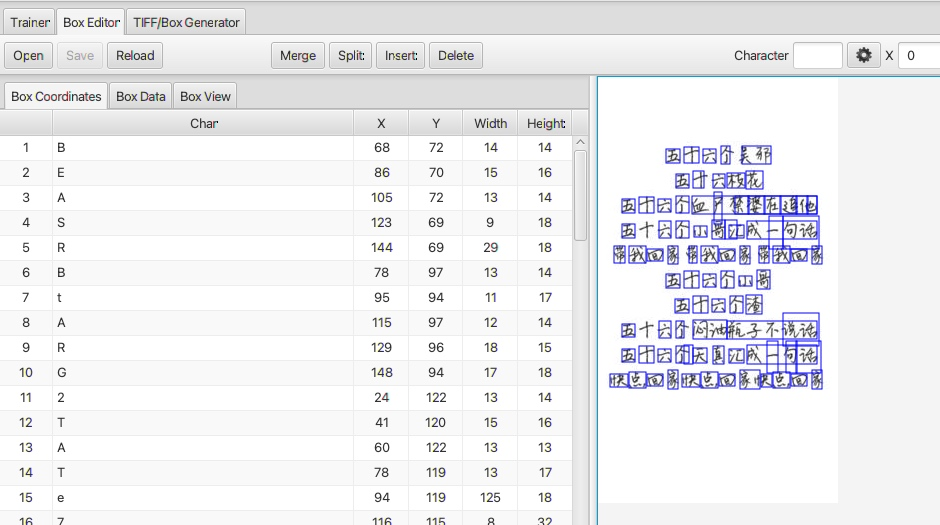
调整
box选中第一个字，右边可以看见选中的字为红色了，然后通过X、Y、W、H调整选框大小，直到刚刚好包住文字。最后更改
character为选中字的真实值，如下选中的字的真实值为五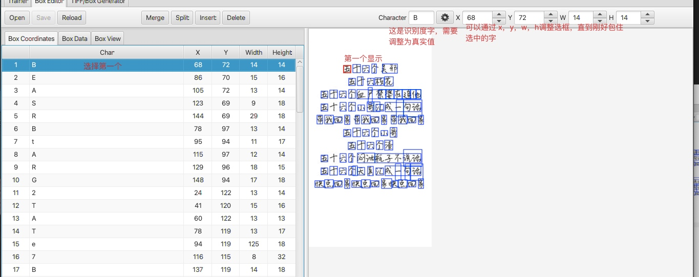
更改真实值之后需要点击旁边的按钮
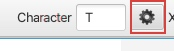以下按钮分别是合并、切分（把一个分成两个）、插入、删除box
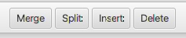
点击保存可以保存修改后的box
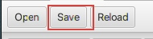
重复上面步骤直到调整好所有的字
整理好所有的文字之后的效果
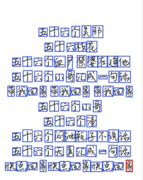旁边的效果
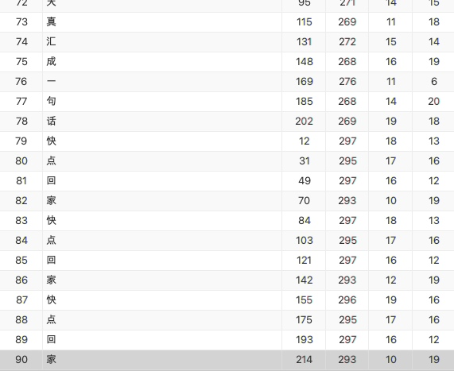点击保存
生成
.traineddata后缀的文件- 点击
trainer按钮 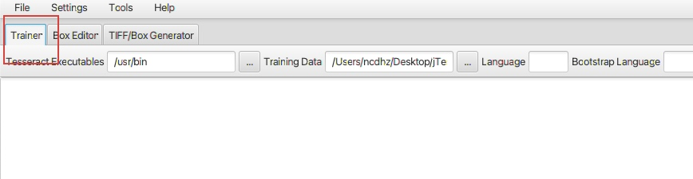 找到
tesseract命令文件/usr/local/bin/tesseract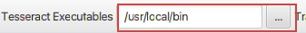
指定刚才box文件所在目录
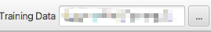指定
language名字 如：my_chi_sim调整下拉选项如图
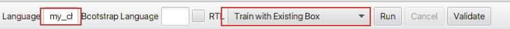点击
Run按钮- 会生成一些列文件，不过我们只需要 tessdata 目录下的文件
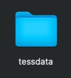
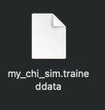
- 点击
拷贝
my_chi_sim.traineddata到/usr/local/share/tessdata目录sudo cp my_chi_sim.traineddata /usr/local/share/tessdata
使用刚刚做好的语言包
- 找到刚才需要识别的图片目录
执行下面语句
tesseract -l my_chi_sim 图片名 生成文件的文件名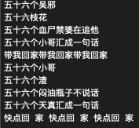
是不是效果还可以呢
python中使用tesseract下载
pytesseractpip install pytesseract打开
python环境# 终端输入 python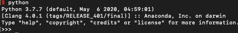
输入以下代码
from PIL import Image import pytesseract
pytesseract.image_to_string(Image.open('图片路径'), lang='my_chi_sim')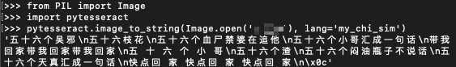